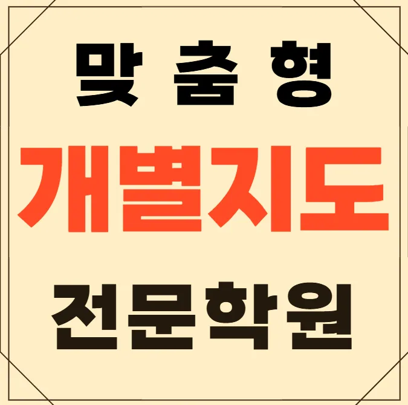

첫 번째로 운정 중학생 수학학원의 교육 철학이 가정의 가치와 맞는지 살펴보세요. 둘째, 강사의 경력과 전문성을 확인하는 것이 중요합니다. 셋째, 수업 시간표가 아이의 일상 리듬에 어울리는지 검토해 보세요. 넷째, 운정 중학생 수학학원 시설이 안전하고 학습에 집중할 수 있는 환경인지 직접 방문해 판단합니다. 다섯째, 수강료 대비 제공되는 교육 콘텐츠가 충분히 풍부한지 비교해 보면 선택에 큰 도움이 됩니다. 특히 운정은 주거 환경이 조용해 집중하기 좋은 분위기를 제공하니, 주변 운정 중학생 수학학원가와의 거리도 고려해 보시면 좋겠어요.
운정은 주거 환경이 조용하고 학군이 안정적이라 초등 저학년은 놀이와 융합 교육을 통해 기초 흥미를 키우고, 초등 고학년은 교과 연계 프로젝트로 논리적 사고를 확장하며, 중학생은 진로 탐색과 심화 학습을 병행해 학업과 진로 목표를 동시에 잡고, 고등학생은 입시 전략과 심화 과목 집중을 통해 경쟁력을 강화하고, 전체 학년은 지역 커뮤니티와 연계된 체험 학습으로 실생활 적용 능력을 높여요
이곳은 생각 흐름을 말해보는 방식으로 학생 스스로 논리 구조를 정리하도록 돕는 수업을 운영해요. 주요 대상은 기본 개념은 알지만 적용 단계에서 막히는 학습자이며, 커리큘럼은 매주 주제별 심화와 피드백 시간을 포함해 효율적인 학습 루프를 만들어요. 수강료는 스즈키1 | 2(입시) 220,000원으로 가성비가 좋은 편이며, 첫 수업에서 겪는 혼란을 꾸준한 지도 속에서 성취감으로 전환시키는 것이 큰 강점이에요
| 학원명 | 와와학습코칭학원 |
| 수강료 | 스즈키1 | 2(입시) 220,000원 |
CURRICULUM
커리큘럼은 목표 등급별 진도 전략을 세분화해 단계별 학습 목표를 명확히 해요. 매주 진행되는 진도 점검을 통해 학습 속도를 조절하고, 부족한 부분은 보강 수업으로 보완해요. 또한 실전 문제 풀이와 개념 복습을 교차 배치해 이해도를 높여요. 정기 모의고사 결과를 분석해 개인 맞춤형 학습 플랜을 재조정해요. 이런 체계적인 접근이 장기적인 성적 향상에 기여해요.
기출 연습 중심의 수업을 받고 나서 처음으로 일등급에 진입하는 학생들이 많아요. 주기적으로 스스로를 점검하고 학습을 리뷰하는 습관을 기를 수 있도록 선생님이 꼼꼼하게 지원해 주거든요. 막연히 열심히 하기보다는 자신의 취약점을 집중 공략하는 방법을 알려주니 성적이 오르는 게 느껴진답니다. 운정 인근에서 이런 식의 관리를 받는 건 정말 큰 경쟁력이 돼요. 학생 스스로도 공부하는 재미를 느끼게 되는 과정이에요.
우리는 아이의 가능성을 무조건 믿어준다는 마음으로 지도해요. 습관화 학습 구조와 꼼꼼한 계획표 운영을 소개해 드리는데, 변화의 핵심은 아이가 아니라 바로 방법이라는 점을 꼭 인식시켜 드려요. 단원별 요약표 수업을 활용하고 반복 적용해서 전체적인 흐름을 잡게 해 준답니다. 학습 성과를 스스로 점검하고 피드백할 수 있도록 돕는 시스템을 통해 아이가 주도적으로 학습하게 만드는 것이 우리의 목표예요. 올바른 방법만 들어가면 누구나 성장할 수 있다는 확신을 가지고 지도해요.
우리 운정 중학생 수학학원은 중학교 2학년으로 학습 태도는 좋지만 응용 문제 풀이에 어려움을 겪는 학생에게 특히 효과적이에요. 시험 일정에 맞춰 분량을 조절하지 못하는 경우에도 체계적인 관리로 학습 효율을 높여요
운정 중학생 수학학원 덕에 공부 루틴이 확실히 잡혔어요. 처음에는 규칙적인 생활이 어려웠는데 선생님이 차근차근 도와주신 덕분에 이제는 알아서 시간을 지키게 됐어요. 상담 때 따뜻한 말투로 이야기해줘서 부담 없이 말할 수 있었어요. 운정 중학생 수학학원에 가는 게 무서웠는데 선생님이 친구처럼 다가와주니까 편하게 고민을 털어놓을 수 있더라고요. 정기 피드백으로 관리가 체계적이라 안심돼요. 부모님께 저의 상태가 어떻게 변하고 있는지 자세히 알려주셔서 집에서도 저를 믿고 지켜봐 주시는 것 같아 뿌듯해요. 첫 상담에서 희망을 심어준 따뜻한 한마디가 기억에 남아요. 너무 못할 거라 걱정했는데 할 수 있다고 격려해 주셔서 힘이 났어요. 교재가 실생활 사례로 구성돼 있어서 이해가 쏙 들어와요. 지루한 이론 공부가 아니라 내 주변에서 일어나는 일들과 연결해서 설명해 주니까 재미있게 공부할 수 있었어요.
